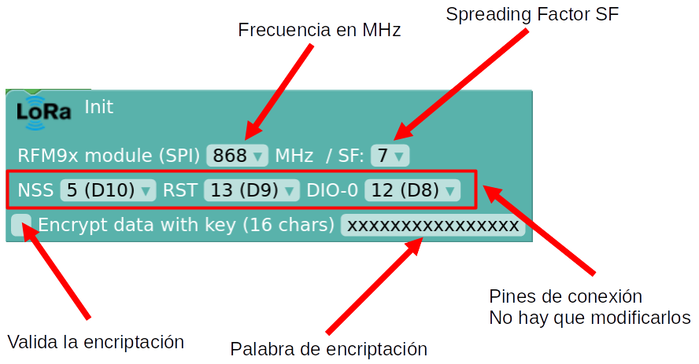

Módulo Lora - LoRaWan. Comunicaciones LoRa
A MODIFICAR CON AMPLIACIÓN DE BLOQUES DE CONFIGURACIÓN AVANZADA DE LORA
Los módulos LoRa pueden enviar y recibir señales LoRa (LongRange). LoRa es una tecnología de comunicación patentada, que está pensada para comunicaciones con un bajo consumo de energía, largo alcance y buena inmunidad frente al ruido, lo que la hace ideal para aplicaciones IoT.
De nuestro dispositivo LoRa podemos configurar tres parámetros con arduinoblocks:
- Frecuencia (MHz): las frecuencias de funcionamiento varían dependiendo del país y suelen ser las bandas 433 MHz, 868 MHz y 915 MHz. En nuestro caso 868 MHz.
- Spreading Factor SF: Valor entero entre 7 y 12, que representa el parámetro de propagación de las señales LoRa (chirps), que define cuántas señales (chirps) se envían por segundo. Para que se
 pueda producir la comunicación entre emisor y receptor deben de tener el mismo SF. A menos SF más velocidad de transmisión de datos y menos alcance, a más SF menos velocidad de transmisión de datos y más alcance. El alcance también depende en gran medida del entorno y las posibles construcciones u obstáculos que se encuentren a su paso.
pueda producir la comunicación entre emisor y receptor deben de tener el mismo SF. A menos SF más velocidad de transmisión de datos y menos alcance, a más SF menos velocidad de transmisión de datos y más alcance. El alcance también depende en gran medida del entorno y las posibles construcciones u obstáculos que se encuentren a su paso. -
Palabra de encriptación de 16 caracteres: se puede usar o no, sirve para proteger nuestros datos enviados a través de un proceso de encriptación. Para que se pueda producir la comunicación entre emisor y receptor deben de tener la misma palabra de encriptación.
